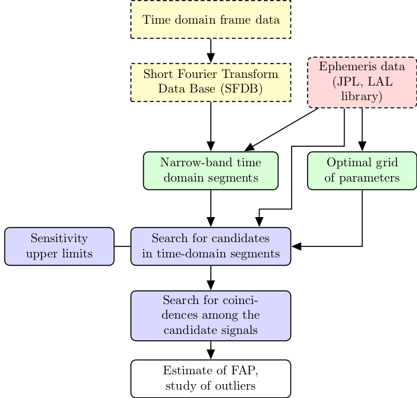

Polgraw Time Domain Fstatistic (TDFstat) pipeline: search for almost monochromatic gravitational wave signals
This is the documentation of a gravitational-wave search pipeline of the Polgraw group.
The pipeline's source code is available here.
Pipeline flowchart

Topics
- Input data generation
- F-statistic candidate signal search
- Coincidences between candidates
- False alarm probability of coincidences
- Followup of interesting outliers
- Sensitivity upper limits
- Pipeline: a minimal example
- Documents and publications
Contributors
In alphabetic order:
- Pia Astone
- Michał Bejger
- Jan Bolek
- Paweł Ciecieląg
- Orest Dorosh
- Aleksander Garus
- Andrzej Królak
- Máté Ferenc Nagy-Egri
- Maciej Piętka
- Andrzej Pisarski
- Gevorg Poghosyan
- Magdalena Sieniawska
- Rafał Skrzypiec